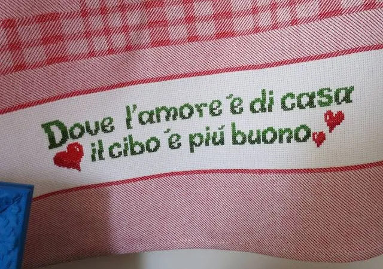

La Cucina Interna

La nostra struttura ospita una cucina interna alla scuola. Questo ci permette di preparare tutti i pasti freschi ogni giorno (merenda del mattino, pranzo e merenda al pomeriggio), sia per il Nido sia per la Scuola dell'Infanzia.
I menù seguono scrupolosamente le tabelle dietetiche approvate dall'AUSL di Ravenna, rispettando le grammature previste e tutte le normative H.A.C.C.P. (D.Lgs 155/97) relative alla sicurezza ed igiene degli alimenti.
Intolleranze e Diete Speciali
Siamo attrezzati e preparati per somministrare pasti a bambini con intolleranze alimentari, allergie e/o esigenze dietetiche particolari, garantendo la massima sicurezza e attenzione ad ogni singolo bambino.
Educazione Alimentare e Relazione
I ritmi dei pasti sono regolari ma anche flessibili in relazione all'età e all'autonomia dei bambini. Diamo particolare attenzione alla qualità relazionale di questo importante momento della giornata.
Il momento del pasto deve abbinare l'interazione individualizzata delle educatrici con i singoli bambini alla creazione di un clima positivo. Non si tratta di un momento centrato esclusivamente sul cibo, bensì è volto a promuovere una buona educazione alimentare, stimolando la scoperta degli alimenti, dei colori, degli odori e dei sapori in modo sereno e condiviso.